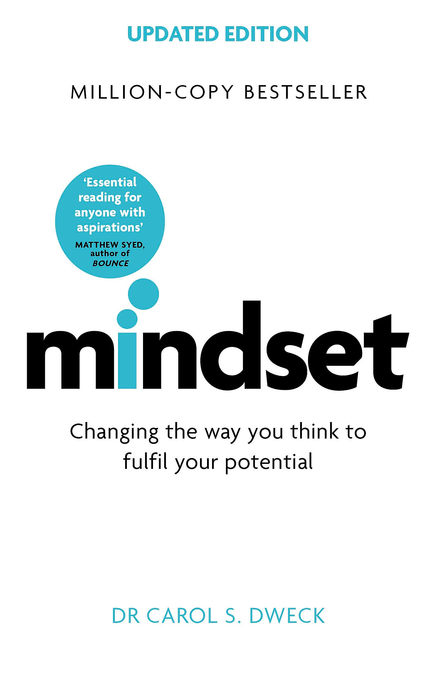

Mindset distills decades of Carol Dweck's research into a single, deceptively simple distinction: some people believe their qualities — intelligence, talent, personality, even relationship compatibility — are fixed traits, carved in stone from birth. Others believe those same qualities are starting points that can be developed through effort, strategy, and the help of others. Dweck calls the first the fixed mindset and the second the growth mindset, and the book's central claim is that this one belief, often held unconsciously, quietly determines how people respond to challenge, criticism, and failure across every domain of life.
The book grew out of Dweck's early research watching children respond to difficult puzzles: some collapsed into helplessness at the first sign of struggle, even ones who had been performing well moments before, while others met the exact same difficulty with something close to relish, treating it as a chance to learn. What surprised Dweck wasn't that children differed in ability — it was that ability barely predicted the reaction. What predicted it was whether a child believed intelligence was fixed (making struggle a threat, a sign of not being smart) or capable of growth (making struggle simply the process of getting smarter).
From that observation, Dweck builds outward — into education, sports, business, and relationships — showing the same fixed/growth split producing dramatically different outcomes in each domain, often independent of raw talent. The book is less a self-help program with a rigid multi-step method and more a lens: once you can see the fixed mindset operating — in yourself, your child, your team, your partner — you gain the ability to interrupt it and choose differently, which is precisely the book's most practical and durable contribution.
The book's entire argument compressed into one comparison. The same event lands completely differently depending on which mindset is interpreting it.
Praising a person's intelligence or talent ("you're so smart") reliably installs a fixed mindset, even when purely well-intentioned — it teaches that worth is tied to an innate quality that can be revealed as lacking. Praising the process — effort, strategy, focus, persistence, improvement — reliably installs a growth mindset instead. This is Dweck's single most actionable, widely cited finding.
A self-reflection technique for adults: name the internal voice that appears when you're challenged or criticized and urges you to protect your ego rather than engage. Learning to recognize this persona's specific triggers creates a moment of choice — respond as the persona wants, or deliberately choose the growth-mindset response instead.
An educational curriculum, developed from Dweck's research, that teaches students the neuroscience of how the brain physically strengthens through effortful practice. Students who understood the biological mechanism behind growth showed measurable shifts toward growth-mindset behavior and improved academic outcomes.
Two leadership models drawn from the business chapter: a "genius with a thousand helpers" culture, dependent on one leader's judgment never being wrong, versus a "collective genius" culture that develops capability throughout the organization and actively seeks disconfirming information. The second is more durable because it doesn't depend on infallibility.
Becoming is better than being.
The passion for stretching yourself and sticking to it, even when it's not going well, is the hallmark of the growth mindset.
Why waste time proving over and over how great you are, when you could be getting better?
Not yet. It turns out that the words "not yet" changed everything.
If the book has one idea worth carrying forward above all others, it's that effort and struggle are not evidence of inadequacy — they are the actual mechanism by which capability gets built. The fixed mindset treats needing to try hard as faintly embarrassing, an admission that talent alone wasn't enough. The growth mindset inverts this completely: trying hard is not a consolation prize for lacking natural ability, it is how ability of any kind is actually produced, at any age, in any domain.
This reframing has an outsized practical effect precisely because it's so easy to apply in the moment. The instant a setback, a piece of criticism, or a difficult new skill triggers the thought "I'm just not good at this," the growth-mindset move is to add one word — "yet" — and ask what strategy, effort, or help would move the needle, rather than treating the current struggle as a final verdict on capability.
What makes this durable rather than just motivational is that Dweck backs it with a genuine mechanism: the brain physically changes and strengthens through effortful engagement, which means the growth mindset isn't wishful thinking layered on top of reality — it's a more biologically accurate description of how learning actually works than the fixed mindset's assumption of static, unchangeable ability.
Mindset earns its status as a modern classic by taking a genuinely simple idea — beliefs about whether ability is fixed or can grow shape how people respond to challenge — and following it with rigor and range into education, sport, business, and relationships, without ever needing to complicate the core distinction to make it fit each domain.
Its greatest strength is how immediately actionable the research is. The person-praise vs. process-praise finding alone changes concrete, everyday language for parents, teachers, coaches, and managers — a rare case of academic psychology translating directly into a specific sentence you can say differently starting today.
The honest caveat is that some of the underlying research has faced replication scrutiny in the years since publication, and the book's later-chapter case studies (particularly in business and sport) lean more on illustrative anecdote than the tighter experimental work in the early chapters. Read it as a genuinely useful lens for interpreting your own and others' reactions to challenge — not as a settled, unchallengeable science of achievement.
The practical recommendation: read the whole book once for the framework, then keep the final chapter's fixed-mindset-persona technique close at hand. The real value isn't in agreeing intellectually that growth mindset sounds right — it's in catching your own fixed-mindset reaction in the moment it happens, which is exactly the skill the book spends its last pages building.